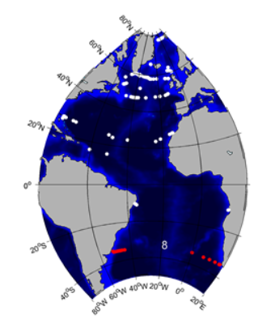
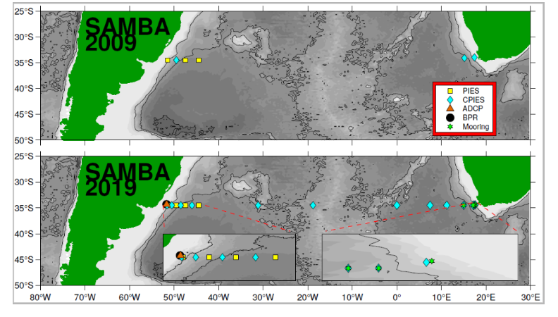
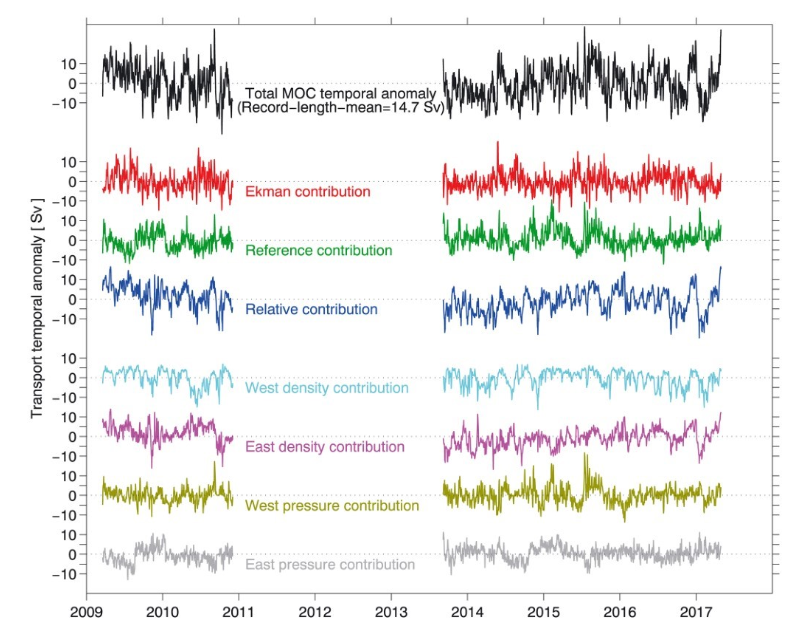

| |||||||||||||
|
2. GSR Greenland Scotland Ridge 3. OSNAP Overturning in the Subpolar North Atlantic Program 4. NOAC North Atlantic Changes 6. MOVE Meridional Overturning Variability Experiment 8. SAMBA-SAMOC South Atlantic Meridional Overturning Circulation
|
SAMBASouth Atlantic Meridional Overturning Circulation – Basin-wide Arrayhttps://www.aoml.noaa.gov/phod/SAMOC_international/ 
Brief description of the TMA
The SAMBA is a combination of a western and an eastern subarray at about 34.5°S (see https://www.aoml.noaa.gov/phod/SAMOC_international/ ).

Figure 1: Mooring locations of SAMBA along 34.5°S in 2009 and 2019 Data products: volume transport time seriesFig. 2: Time series (temporal anomaly relative to the record‐length mean) of the basin‐wide MOC volume transport across 34.5°S. The total (net) transport anomaly is shown in black. The record‐length mean total MOC value that has been removed to create the anomaly is noted on the figure. Also shown are the contributions of Ekman, geostrophic reference flow, and geostrophic relative flow components; the geostrophic relative and reference flow components are further broken down into the contributions from variations in the western and eastern density or pressure contributions, respectively. For all components, the “contribution” is estimated as the difference between the total MOC (black line) and the MOC calculated while holding the term in question constant (i.e., the reference contribution is the difference between the total MOC and the MOC that was calculated holding the bottom pressure values on both sides of the basin constant). From Meinen et al., GRL, 2018, doi: 10.1029/2018GL077408. Transport data (Note that different from the other TMAs these are transport anomalies!) can be downloaded hereMeinen, C. S., S. Speich, A. R. Piola, I. Ansorge, E. Campos, M. Kersale, T. Terre,
M.-P. Chidichimo, T. Lamont, O. T. Sato, R. C. Perez, D. Valla, M. van den Berg, M. Le Henaff, S. Dong, and S. L. Garzoli, (2018).
Meridional overturning circulation transport variability at 34.5°S during 2009–2017:
baroclinic and barotropic flows and the dueling influence of the boundaries. Geophys. Res. Lett. 45, 4180–4188. doi: 10.1029/2018GL077408 How to Acknowledge/Cite:
SAM Project Data:
PublicationsMeinen, C. S., A. R. Piola, R. C. Perez, and S. L. Garzoli, Deep Western Boundary Current transport variability in the South Atlantic: Preliminary results from a pilot array at 34.5°S, Ocean Sci., 8, 1041-1054, doi:10.5194/os-8-1041-2012, 2012. Meinen, C. S., S. Speich, R. C. Perez, S. Dong, A. R. Piola, S. L. Garzoli, M. O. Baringer, S. Gladyshev, and E. J. D. Campos, Temporal variability of the meridional overturning circulation at 34.5°S: Results from two pilot boundary arrays in the South Atlantic, J. Geophys. Res. Oceans, 118, 6461-6478, doi:10.1002/2013JC009228, 2013. Ansorge, I. J., M. O. Baringer, E. J. D. Campos, S. Dong, R. A. Fine, S. L. Garzoli, C. S. Meinen, R. C. Perez, A. R. Piola, M. J. Roberts, S. Speich, J. Sprintall, T. Terre, M. A. Van de Berg, Basin-Wide Oceanographic Array Bridges the South Atlantic, EOS, 95, 53-54, doi:10.1002/2014EO060001, 2014. Garzoli, S.L., S. Dong, R. Fine, C. Meinen, R.C. Perez, C. Schmid, E. van Sebille, and Q. Yao, The fate of the Deep Western Boundary Current in the South Atlantic, Deep-Sea Res. I, doi:10.1016/j.dsr.2015.05.008, 2015. Meinen, C.S., S.L. Garzoli, R.C. Perez, E. Campos, A.R. Piola, M.P. Chidichimo, S. Dong, and O.T. Sato. Characteristics and causes of Deep Western Boundary Current transport variability at 34.5°S during 2009-2014, Ocean Sci., 13(1):175-194, doi:10.5194/os-13-175-2017, 2017. Meinen, C. S., S. Speich, A. R. Piola, I. Ansorge, E. D. Campos, M. Kersale, T. Terre, M. P. Chidichimo, T. Lamont, O. T. Sato, R. C. Perez, D. Valla, M. Le Henaff, S. Dong, and S. L. Garzoli, Meridional overturning circulation transport variability at 34.5°S during 2009–2017: baroclinic and barotropic flows and the dueling influence of the boundaries, Geophys. Res. Lett. 45, 4180–4188. doi: 10.1029/2018GL077408, 2018. Kersale, M., Lamont, T., Speich, S., Terre, T., Laxenaire, R., Roberts, M.J., van den Berg, M.A., Ansorge, I., Moored observations of mesoscale features in the Cape Basin: Characteristics and local impacts on water mass distributions, Ocean Sci., 14(5),923-945, doi:10.5194/os-2017-85, 2018. Valla, D., A. R. Piola, C. S. Meinen, and E. J. D. Campos, Strong mixing and recirculation in the northwestern Argentine Basin, J. Geophys. Res. Oceans, 123, 4624-4648, doi: 10.1029/2018JC013907, 2018. Frajka-Williams, E., I.J. Ansorge, J. Baehr, H.L. Bryden, M.P. Chidichimo, S.A. Cunningham, G. Danabasoglu, S. Dong, K.A. Donohue, S. Elipot, N.P. Holliday, R. Hummels, L.C. Jackson, J. Karstensen, M. Lankhorst, I. Le Bras, M.S. Lozier, E.L. McDonagh, C.S. Meinen, H. Mercier, B.I. Moat, R.C. Perez, C.G. Piecuch, M. Rhein, M. Srokosz, K.E. Trenberth, S. Bacon, G. Forget, G.J. Goni, P. Heimbach, D. Kieke, J. Koelling, T. Lamont, G. McCarthy, C. Mertens, U. Send, D.A. Smeed, M. Van den Berg, D. Volkov, and C. Wilson, Atlantic Meridional Overturning Circulation: Observed transports and variability, Front. Mar. Sci., 6:260, doi:10.3389/fmars.2019.00260 2019. Kersale, M., R.C. Perez, S. Speich, C.S. Meinen, T. Lamont, M. Le Henaff, M.A. van den Berg, S. Majumder, I.J. Ansorge, S. Dong, C. Schmid, T. Terre, and S.L. Garzoli, Shallow and deep eastern boundary currents in the South Atlantic at 34.5°S: Mean structure and variability, J. Geophys. Res. Oceans, 124(3):1634-1659, doi:10.1029/2018JC014554, 2019. Valla, D., A.R. Piola, C.S. Meinen, and E. Campos, Abyssal transport variations in the southwest South Atlantic: First insights from a long-term observation array at 34.5°S, Geophys. Res. Lett., 46(12):6699-6705, doi:10.1029/2019GL082740, 2019. | ||||||||||||